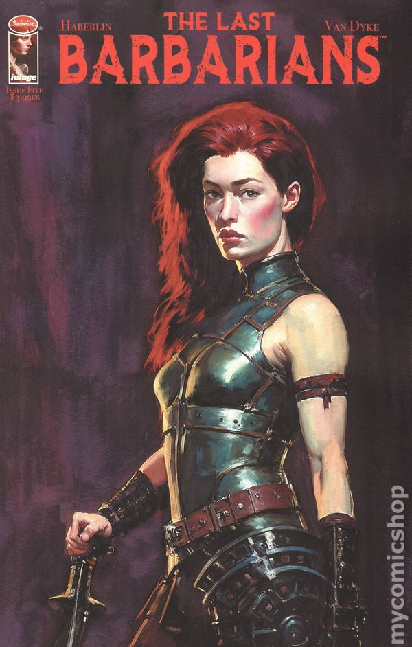
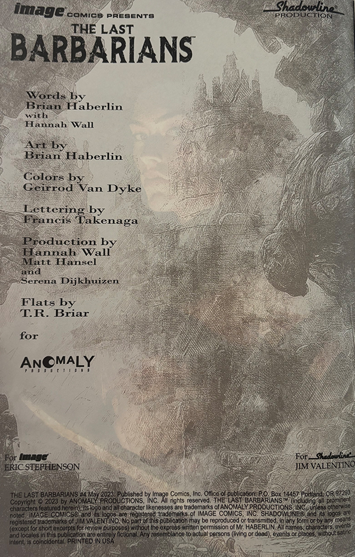

Production Assistant
Anomaly Productions
Supported production operations across a range of projects — coordinating logistics, managing on-set workflows, and ensuring smooth execution from pre-production through delivery.
Worked closely with production teams to manage scheduling, communicate across departments, and keep projects on track under fast-paced, deadline-driven conditions.

